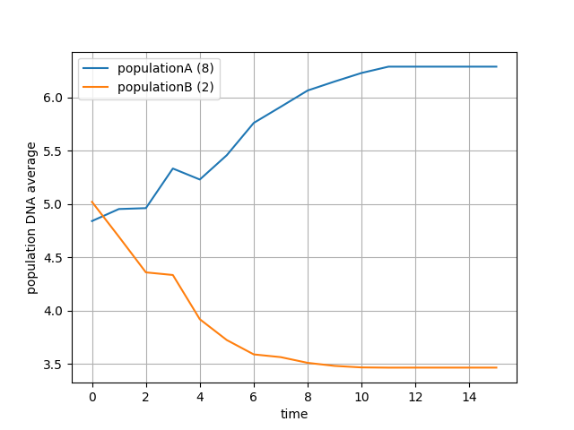
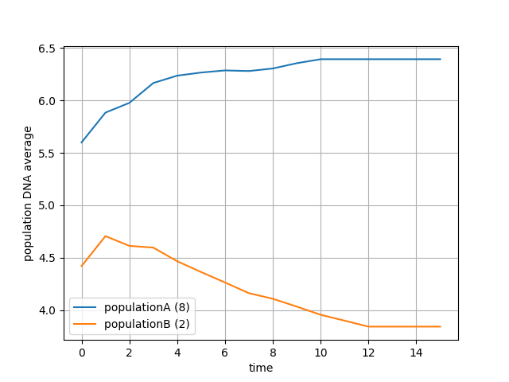
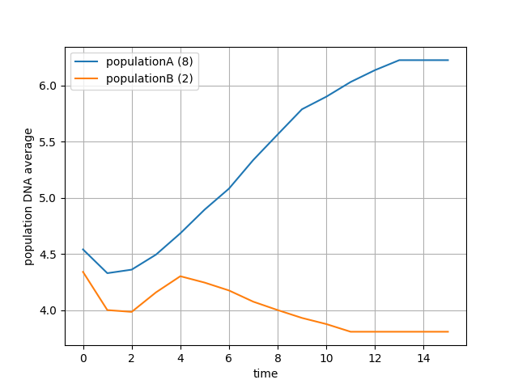
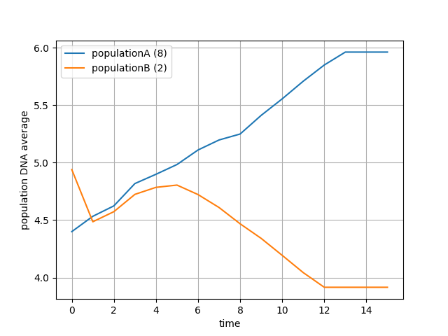
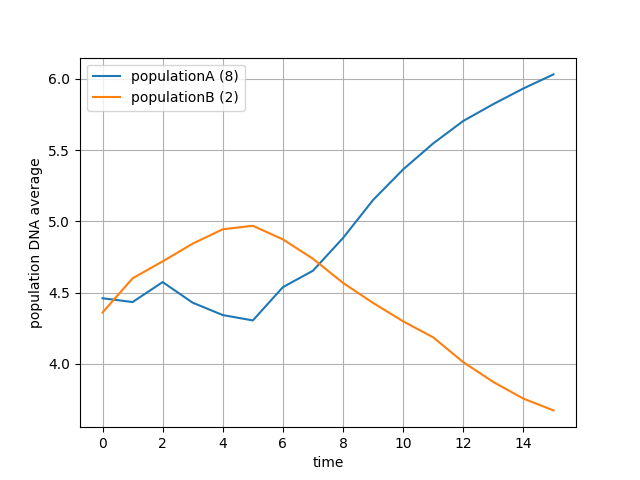
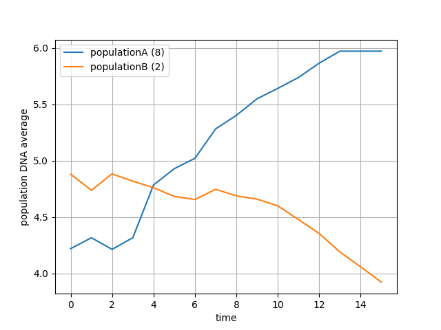

h:4
the elegance and beauty of evolution is that it didn't introduce anything we didn't know before about nature, it just tells us that given some observable facts we should have got it very long ago.
those observable facts are represented in the following sub-sections.
nature always puts pressure on us, and always introduces challenges we have to overcome to survive.
we are not all the same in the eyes of nature, different animals are awarded or punished based on how they perform in life challenges.
any new born baby gets his traits constructed from his parent's traits, not all traits are hereditary traits though, but those don't contribute to biological evolution so they are irrelevant here
the randomness salt in the gene soup.
it happened many times that a child has been porn without a sexual organs or maybe deformed ones, since obviously this couldn't be inherited, it has to be a completely new gene introduced in this poor baby
mutations are very crucial in the evolution mechanism, you can consider it the experimentation ground of species, a field of trying new ideas and testing them by putting them into action.
if a new trait is beneficial in many ways, but not sexy enough to attract the opposite sex to reproduce new beings with this trait, it will die young. on the other hand a new trait may succeed only because it attracts the other sex regardless of how beneficial it is on other aspects.
but i should say here that's sexual selection and natural selection aren't always independent, for example healthy males are more attractive in females eyes, that's because nature selected females who select those males, as those females produce healthy children
for two groups to develop new traits in different directions they must be physically apart, or in the jargon there must be two gene pools. this happens in nature in several ways, but the primary cause is natural disasters.
from Wikipedia
In biology, a species is the basic unit of classification and a taxonomic rank, as well as a unit of biodiversity, but it has proven difficult to find a satisfactory definition. Scientists and conservationists need a species definition which allows them to work, regardless of the theoretical difficulties
species are actually just an arbitrarily chosen unit for biodiversity, or a measure of disparity or unlikeness. there is no natural distinction between differences between individuals and differences between species other than that difference between species are much more.
for some reason the idiotic idea that says evolution is true inside the same specie but not true outside it has found its way into some people's mind. apparently its nothing more than a last try to keep something for god while superficially believing in evolution.
by the definition in the previous section , if evolution is true for one trait, the process by necessity will lead to speciation.
the past sections was an introduction but in this section we will discuss the code in some detail.
what we need is some sort of a data type that will simulate the concept of animals by having the relevant attributes real animals have, such as age, some form of genetic code, parents, sexual abilities, gender, and a geographical location.
you guessed it, a python class.
# global constants
DNA_LOW = 0 # minimum DNA value
DNA_HIGH = 11 # maximum DNA value
DNA_LEN = 5 # how many cells in each DNA array
ISLANDA_TYPICAL = 8 #the trait islandA demand
ISLANDB_TYPICAL = 2 #the trait islandB demand
INITIAL_POPULATION_NUMBER = 10
NUMBER_OF_GENERATIONS = 15
MAX_POPULATION = 40000
# just to save time cause mating the whole population after 4000 will take ages
# some calculation constants
EXP = 2
FACTOR = 1/8
translate = lambda rank: int((rank**EXP)*FACTOR)
class JesusException(Exception):
""" raised whenever a child is porn without a father
(this will not be raised actually its just a joke :D)
"""
pass
def calc_rank(dna, typical):
rank = sum(abs(dna - typical))/DNA_LEN
return 8-rank
class Animal():
def __init__(self, island, mom=None, dad=None):
if (dad is None) and (mom is None):
# generation zero
self.dna = np.random.randint(DNA_LOW, DNA_HIGH, DNA_LEN)
elif (dad is not None) and (mom is not None):
midpoint = int(DNA_LEN/2)
self.dna = np.append(dad.dna[:midpoint], mom.dna[midpoint:])
random_index = np.random.randint(DNA_LEN)
self.dna[random_index] = np.random.randint(DNA_LOW, DNA_HIGH)
else:
raise(JesusException)
if island == 'A':
self.rank = calc_rank(self.dna, ISLANDA_TYPICAL)
elif island == 'B':
self.rank = calc_rank(self.dna, ISLANDB_TYPICAL)
self.island = island
self.dad = dad
self.mom = mom
self.gender = np.random.randint(2) # 0 male 1 female
self.power = translate(self.rank)
self.time = translate(self.rank)
first we define some global constants (not all of those makes sense just yet but they will soon).
next we define the Jesus exception and the calcrank function. see DNA and ranking .
the animal class code is mostly straight forward except for few points:
in reality DNA can be simplified as a list of numbers, and that's what we will do exactly, we will assign every animal an attribute self.dna which holds bunch of numbers, this list can be of any length theoretically but it is constrained by the computational power you have. for me i found that a list of 5 will output in a sensible time, if you have a more powerful machine you can increase DNALEN to the value you want.
the range of numbers any cell can holds can be arbitrarily chosen as well. i choose a range from 0 to 11
the picture here is as follows:
every animal has associated list. say animalA has DNA [1, 4, 3, 1, 9] and animalB has DNA [7, 3, 5, 8, 8]. based on those numbers we will compute how this animal is functioning, but before that we have to attach a meaning for those number, or way to say whether [1, 4, 3, 1, 9] will perform more than [7, 3, 5, 8, 8]? and why?. so we have to introduce the rank
we can choose any mathematical relation between those number to compute the rank, but for the sake of simplification we will say that for a certain environment there is a typical number for example 7, and based on how far each cell from that number is, we will decide how this animal will perform.
so based on that definition and using the previous animal examples A and B, animalB will perform better than animalA in that environment because [7, 3, 5, 8, 8] has cells which are closer to 7 (sum of differences) than the cells of [1, 4, 3, 1, 9]. we represent that mathematically by giving animalB a rank higher than animalA
if there is another environment that demand the number 5, animalA will perform better therefor it will have higher rank than animalB. its important to understand that the rank is local to the environment, there is no such thing as an absolute rank (as in real life).
here is the definition of calcrank function:
this equation just translate the sentence "how far the cells are from the typical number" to a number.
lets look closer to this code snippet
elif (dad is not None) and (mom is not None):
midpoint = int(DNA_LEN/2)
self.dna = np.append(dad.dna[:midpoint], mom.dna[midpoint:])
random_index = np.random.randint(DNA_LEN)
self.dna[random_index] = np.random.randint(DNA_LOW, DNA_HIGH)this code is responsible for computing the new born dna from the dad's and mom's by taking half the mom's dna and half of the dad's and attaching them end to end, pretty much exactly what happens in real life.
but after that it takes one cell and randomly alter it, to emulate the mutation process discussed in natural mutations.
for the evolution process to take place there must be a geographical or environmental isolation, that's why i defined a self.island attribute to store the home of each animal, the island variable is given to the animal constructor at creation time.
every island has its own typical value, hence the constants ISLANDATYPICAL=8 and ISLANDBTYPICAL=2.
the first thing we do in every trial we initiate a population of size INITIALPOPULATIONNUMBER.
populationA = [Animal('A') for i in range(INITIAL_POPULATION_NUMBER)]
populationB = [Animal('B') for i in range(INITIAL_POPULATION_NUMBER)]
means = [get_mean_vals(populationA, populationB)]then calculate the mean values using the function getmeanvals
def get_mean_vals(populationA, populationB):
dnaA = np.concatenate([animal.dna for animal in populationA])
dnaB = np.concatenate([animal.dna for animal in populationB])
return np.mean(dnaA), np.mean(dnaB)to estimate how long the animal will live and how many babies it will give every mating season, we will use of course the rank. the exact relation between rank and longevity can be anything as long as they are directly proportional.
i used an exponential relation to speed up things a little bit, cause again its a matter of computational power.
and in the animal class definition
the mating function is fairly straight forward.
def mate(couple):
mama,papa = couple
babies_number = min(mama.power, papa.power)
return [Animal(mama.island, mom=mama, dad=papa) for i in range(babies_number)]couple is a tuple of male and a female. there is a function called createcouples that takes a list of males and a list of females and return a list of couples. this function discussed in the next section.
i really didn't simulate the independent sexual selection, i reused the rank to sort males and females and make the high ranked females choose the high ranked males. maybe sometime in the future i will write a separate rank for sexual selection and see how things will go.
def create_couples(females, males):
""" takes sorted females and males by rank k """
couples = []
married_men = set()
for female in females:
for male in males:
if (not haram(female,male))and(male not in married_men) :
couples.append((female,male))
married_men.add(male)
break
return couplesthe haram function returns true if the males or females are direct relatives.
def haram(female, male):
return (male == female.dad) or (male.mom == female) \
or ((male.mom == female.mom) and \
(male.dad == female.dad) and male.mom is not None)def mating_season(population):
kill_whos_time_has_come(population)
decrement_time(population)
females = [ animal for animal in population if animal.gender]
males = [ animal for animal in population if not animal.gender]
females = sorted(females, key = lambda f: f.rank)
males = sorted(males, key = lambda m: m.rank)
couples = create_couples(females, males)
babies = []
for couple in couples:
babies += mate(couple)
population += babiesthe matingseason function takes the whole population and does three things:
the main logic of the program is a loop of infinite trials, in every trial we make the following:
if __name__ == '__main__':
ntrials = 0
while True:
print(f'-------------trial{ntrials}-------------')
populationA = [Animal('A') for i in range(INITIAL_POPULATION_NUMBER)]
populationB = [Animal('B') for i in range(INITIAL_POPULATION_NUMBER)]
means = [get_mean_vals(populationA, populationB)]
print('generation zero: ')
print('the mean of population A dna', means[0][0])
print('the mean of population B dna', means[0][1])
iA, iB = 0, 0
for i in range(NUMBER_OF_GENERATIONS):
if len(populationA) < MAX_POPULATION:
mating_season(populationA)
iA += 1
if len(populationB) < MAX_POPULATION:
mating_season(populationB)
iB += 1
means.append(get_mean_vals(populationA, populationB))
ntrials += 1
print(f'after {min(iA,iB)} generations: ')
print('the mean of population A dna', means[i][0] )
print('the mean of population B dna', means[i][1])
print('with diff ', means[i][0] - means[i][1])
plot_means(means)running the program on my machine for four trails outputted the following
-------------trial0-------------
generation zero:
the mean of population A DNA 4.84
the mean of population B DNA 5.02
after 11 generations:
the mean of population A DNA 6.290029719380465
the mean of population B DNA 3.46341901890929
with diff 2.826610700471175
-------------trial1-------------
generation zero:
the mean of population A DNA 5.6
the mean of population B DNA 4.42
after 10 generations:
the mean of population A DNA 6.393710352525346
the mean of population B DNA 3.8421905942027306
with diff 2.5515197583226157
-------------trial2-------------
generation zero:
the mean of population A DNA 4.54
the mean of population B DNA 4.34
after 11 generations:
the mean of population A DNA 6.22569350853549
the mean of population B DNA 3.8069981517701734
with diff 2.4186953567653164
-------------trial3-------------
generation zero:
the mean of population A DNA 4.98
the mean of population B DNA 4.98
after 12 generations:
the mean of population A DNA 6.239204199278249
the mean of population B DNA 3.901722968389635
with diff 2.337481230888614
here we clearly see that the mean value of DNA cells in the initial population is approximately the same across both islands, but by letting them reproduce for a number of generations the means in islandA (which demands cells close to 8) shifted towards 8, while means in islandB (which demands 2) shifted towards 2.
plots of those trials gives a better picture of how the means change overtime rather than comparing the initial and final means.
here are plots of some trials.
     